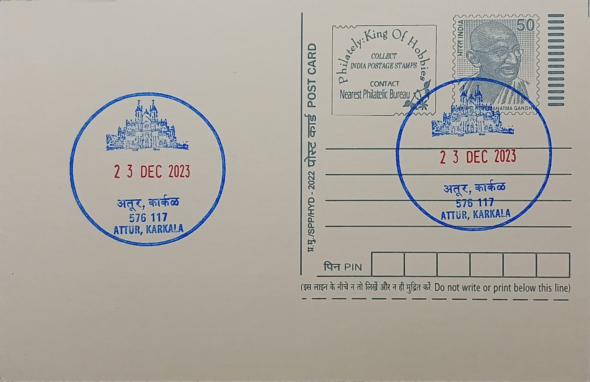

St. Lawrence Minor Basilica
ಸಂತ ಲಾರೆನ್ಸ್ ಚಿಕ್ಕ ಬೆಸಿಲಿಕಾ


The shrine at Attur, on the outskirts of Karkala in Udupi district, traces its origins to a wayside devotion to St. Lawrence that is believed to have existed even before a formal church was recorded there in 1759, during a period of intense Portuguese missionary activity along the Kanara coast. Local tradition holds that the saint's intercession was sought by early Christian settlers of the region, and over time the site grew from a modest place of prayer into one of the most visited pilgrimage centres in coastal Karnataka, its name forever tied to the Roman martyr-deacon St. Lawrence rather than to any regional figure or legend.
As a Roman Catholic pilgrimage church, the basilica's significance rests on its dual identity as both a parish institution serving the local Catholic community of the Diocese of Udupi and a shrine of pan-regional repute, drawing devotees of various faiths who credit St. Lawrence with miraculous cures and answered vows. Pope Francis elevated the shrine to the rank of minor basilica in 2016, formally recognised by the Vatican's Congregation for Divine Worship and the Discipline of the Sacraments, making it the 22nd basilica in India and only the second in Karnataka after St. Mary's Basilica in Bangalore, a distinction that placed Attur among a small group of Indian churches granted that canonical honour.
The congregation's history was marked by considerable hardship, as local Christians were taken captive during the Tipu Sultan era between 1784 and 1799, and it was only after their release that survivors, under the guidance of a Goan priest, built a thatched-roof church near Akre in 1801. This was replaced by another structure in 1839, roughly four kilometres from the earlier site, before Fr. Frank oversaw construction of the present north-facing church, which was blessed and inaugurated on 22 January 1901 by the Vicar General. The building that stands today is known for its Neo-Gothic facade and tall twin spires, a European architectural idiom introduced through the long Portuguese and later diocesan ecclesiastical presence on the coast.
The shrine's most distinguishing feature is the annual Attur Jaatre, or St. Lawrence Shrine Feast, held over the last Tuesday, Wednesday and Thursday of January, when the basilica draws lakhs of pilgrims from across India, including large numbers of Hindus and people of other faiths who come seeking cures, the fulfilment of vows, or blessings for new undertakings. This scale of cross-community participation, unusual for a Catholic shrine of its size, has made the Attur feast one of the notable annual pilgrimage events of coastal Karnataka, comparable in character to other multi-faith Christian pilgrimage sites along the Malabar and Kanara coasts.
Administratively, the basilica functions under the Diocese of Udupi within the ecclesiastical province of Bangalore, and it continues to serve as both parish church and shrine, with its clergy managing a steady calendar of novenas, masses and the January feast alongside ongoing maintenance of the century-old structure. The post office at Attur BO, from which philatelic cancellations bearing the basilica's name and image are issued, sits within this same pilgrimage township, linking the postal record directly to a shrine that remains an active and administratively distinct centre of worship rather than a purely historical monument.
| Date of Introduction | January 18, 2018 |
|---|---|
| Address | Branch Postmaster, |
| Attur BO, | |
| Udupi (dt.), Karnataka - 576117. |